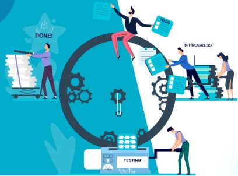

Es la práctica de ITIL v4 que actúa como punto único de contacto entre los usuarios y el proveedor de servicios de TI.
Su objetivo principal es capturar la demanda, gestionar incidentes, solicitudes y consultas, y mejorar la experiencia del usuario, no solo resolver problemas técnicos.
Características:
Está centrado en el usuario y el negocio, no en la tecnología.
Influye directamente en la percepción del valor del servicio.
Trabaja de forma integrada con la gestión de incidentes, problemas, cambios y solicitudes.
Utiliza múltiples canales: portal de autoservicio, chat, correo, teléfono, bots y redes corporativas.
Es clave en entornos modernos: cloud, Agile, DevOps y trabajo remoto.
El Service Desk es experiencia + coordinación + valor, no solo soporte.
Gestión de Incidentes
Gestión de Problemas
Gestión de Cambios

Gestión de Capacidad y Disponibilidad
Conclusiones
El Service Desk es el eje de la experiencia del usuario y la percepción del valor del servicio.
La gestión de incidentes y problemas permite equilibrio entre reacción rápida y prevención.
La gestión de cambios en ITIL v4 favorece la agilidad sin sacrificar control.
Capacidad, disponibilidad y continuidad aseguran la confiabilidad del servicio.
ITIL v4 ofrece un enfoque flexible, moderno y orientado a valor, adaptable a cualquier organización.